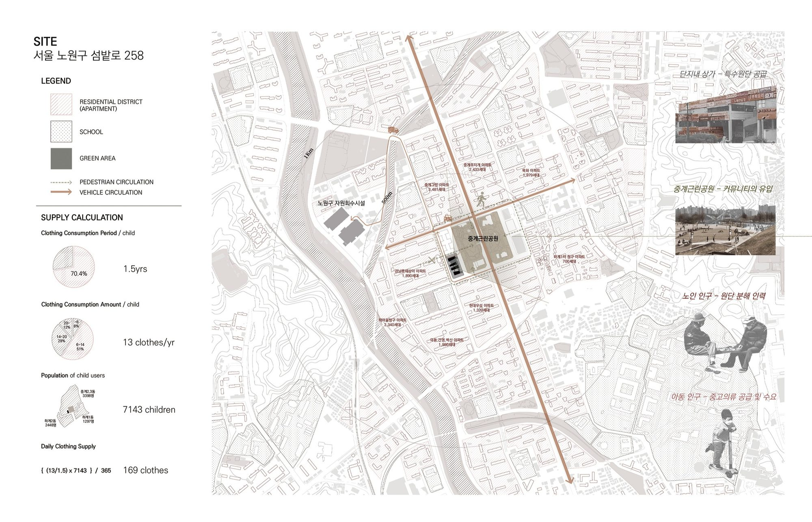
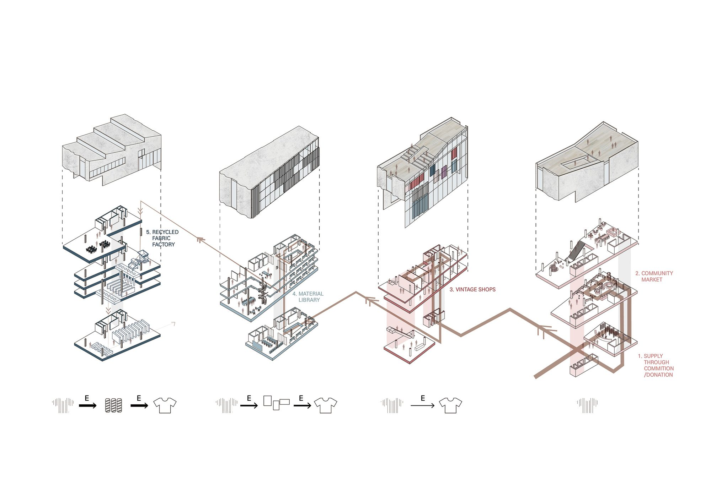
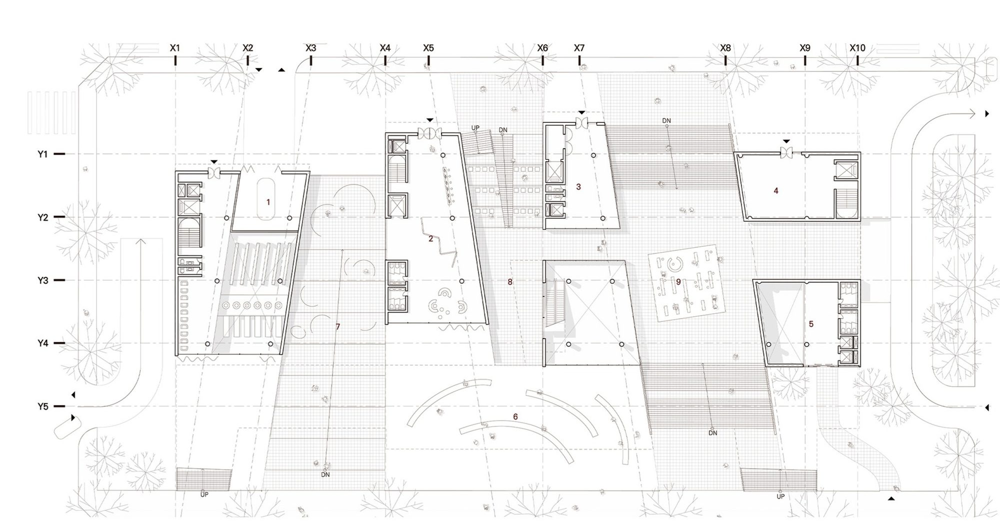
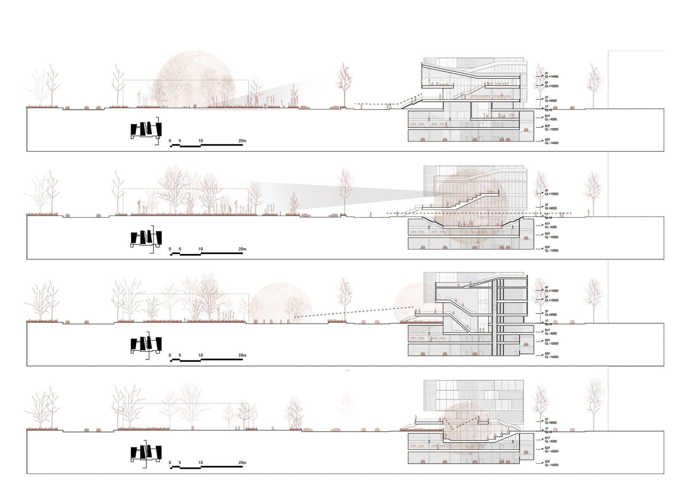
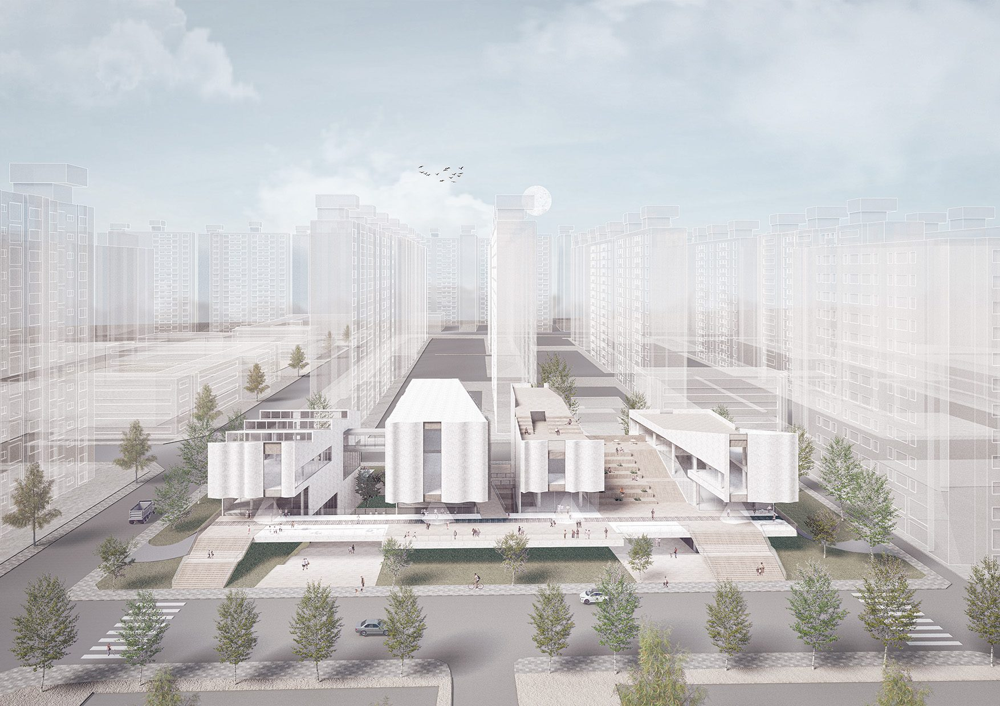
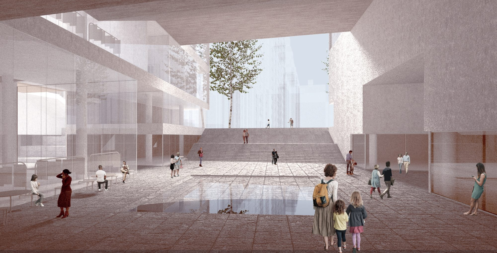
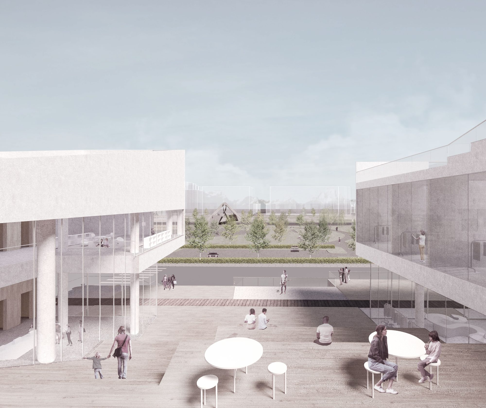
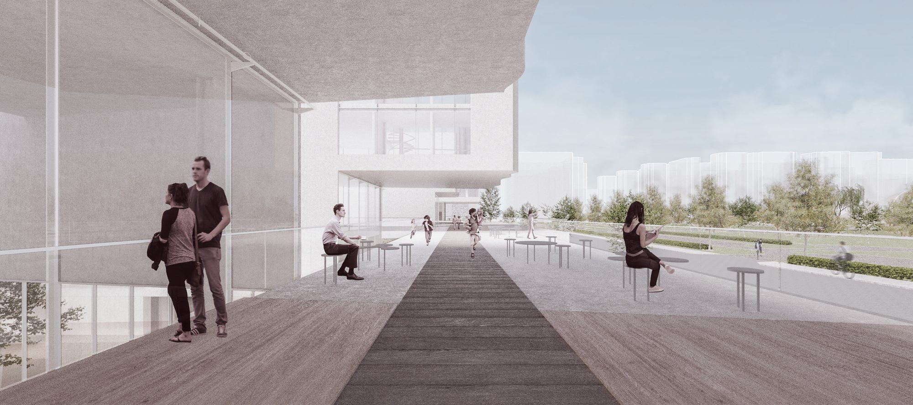
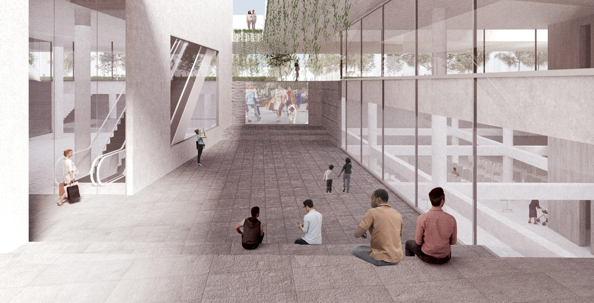
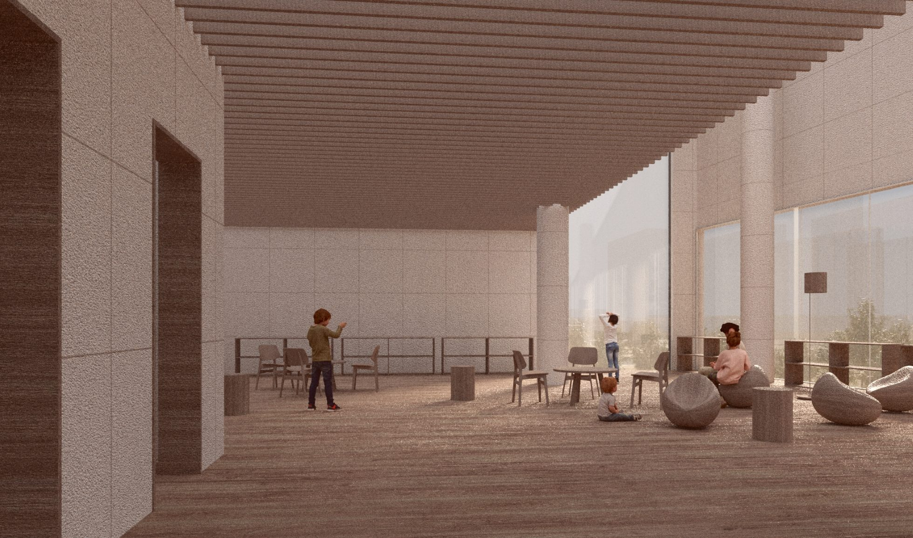

Clothes are already recycled four ways — fibre, fabric, donation and resale — but each is run by a different party, in a different place. The process is broken into pieces that never see one another. This project puts all four back inside a single neighbourhood, so that the stages connect and residents can take part in them.
The arithmetic of a neighbourhood
Junggye 2·3-dong, Hagye 1-dong and Hagye 2-dong discard about 2.69 tons of clothing every day. Handling that within the neighbourhood instead of hauling it across the city cuts logistics from 51.59 to 3.22 t·km per day, and the carbon that goes with it. The four streams are sized accordingly: C2C reuse 30%, B2B reuse 25%, upcycling design 15%, fibre recycling 15%.


Four solids, in order of difficulty
Each stream gets its own building, and the four are arranged in order of decreasing ease of disassembly — from the community market where a garment changes hands whole, through vintage boutiques and designers’ studios, to the fibre recycling factory where it is broken down completely. A garment moves through the site as it loses its original form.




A stage that ties them together
A public stage links the four buildings, giving physical and visual access across the whole process. It also does something quieter: it makes the crowds already in Junggye Park aware of the building across the street. Recycling stops being a service performed elsewhere and becomes something visible from the park bench.



Voids that show their work
Between the solids sit three voids, and their façades are made of the material the building handles. The commercial void uses unsold clothing as it is; the cultural void uses re-manufactured yarn. Recycled fabric gives each void a distinct character, and the envelope explains the programme without a sign.


